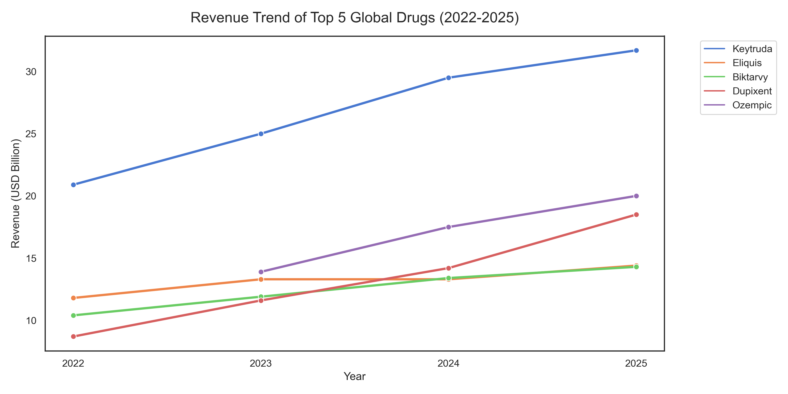
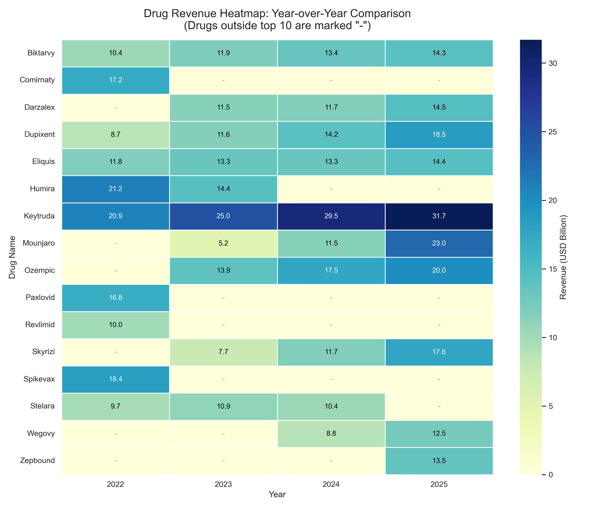
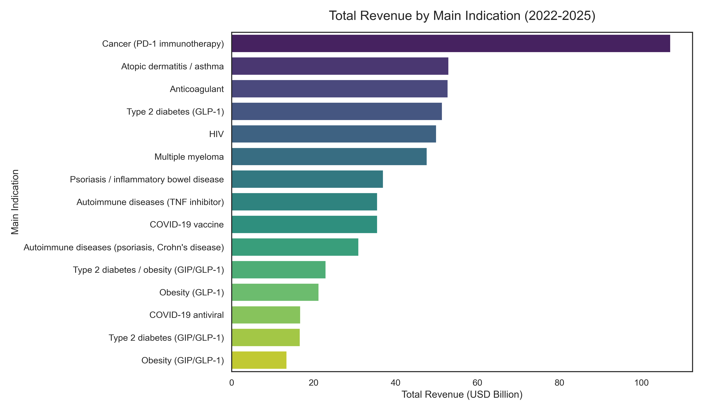

Visualizations
AI Exposure & Employment
Trend Analysis
The following figures visualize occupational AI exposure against projected job growth trends from 2025 to 2030, drawing on BLS employment projections and AI task-exposure indices.
Figure 1
5-Year Employment Trend Forecast by AI Exposure Group
This line chart shows the projected employment trend from 2025 to 2030 by AI exposure group. All groups show growth, but high-exposure jobs increase the most.

Figure 2
Occupational Risk Matrix: Exposure vs. Employment Growth
This bar chart compares AI exposure levels with projected job growth. Data entry shows high AI exposure and negative growth, while software development shows both high exposure and strong growth.

Figure 3
Occupational Risk Matrix: AI Exposure vs. Job Growth (Bubble Chart)
This bubble chart maps occupations by AI exposure and job growth. Jobs in the lower-right area, such as data entry, appear more vulnerable, while jobs in the upper-right area show stronger growth potential.

Context
The U.S. as a High-Immigration,
High-AI-Exposure Economy
In 2024, 31.4 million foreign-born workers made up 19.2% of the entire U.S. civilian labor force — a historic high. This workforce is disproportionately concentrated in AI-exposed sectors: professional & business services (15.4%), information technology, and healthcare. Meanwhile, the H-1B visa program channels skilled immigrants directly into the highest-exposure occupations — computer-related roles accounted for 66% of all H-1B approvals in recent fiscal years.
The H-1B visa effectively funnels foreign talent into the most AI-exposed occupations — software development, data analysis, financial analysis. This creates a compounding dynamic: the same roles most threatened by agentic AI are also the roles with the highest immigrant concentration. If AI displaces these jobs, immigrant workers bear disproportionate risk — while simultaneously being critical to building the AI systems causing that displacement.
Chart A
Immigrant workforce concentration vs. AI exposure by U.S. industry
Industries where immigrants are most concentrated tend to overlap with sectors rated high on AI task exposure. The dual vulnerability is most acute in professional services and information technology.
Sources: BLS Foreign-Born Labor Force Report 2024 (May 2025); Massenkoff & McCrory, Anthropic (2026); O*NET 28.0
The H-1B Paradox
Cheap Labor, High Exposure —
The H-1B Squeeze
Critics argue that H-1B visas allow firms to undercut domestic wages in AI-exposed roles. Proponents counter that immigrant talent builds the AI ecosystem itself. The data reveals both are partially true — creating a paradox where immigration simultaneously accelerates and is threatened by AI displacement.
Chart B
Entry-level job postings decline in AI-exposed sectors
Post-ChatGPT trend in new hire rates for young workers (22–25) in high-exposure occupations.
Source: Massenkoff & McCrory (2026) via CPS; Brynjolfsson et al. (2025)
Chart C
H-1B approvals vs. tech layoffs, major firms
Firms simultaneously receiving H-1B approvals and announcing workforce reductions — a key tension in the current policy debate.
Source: USCIS FY2025 FOIA data; Newsweek (Aug 2025); White House proclamation (Sep 2025)
In FY2025, one software company received over 5,000 H-1B approvals while simultaneously announcing 15,000+ layoffs. A third firm reduced its workforce by ~27,000 since 2022 while being approved for 25,000+ H-1B workers over the same period (White House, Sep 2025). AI adoption is being used to justify domestic workforce reduction while immigration channels keep high-exposure roles filled at lower cost — compressing wages and narrowing entry points for both native-born and immigrant workers.
Comparative Case
South Korea: Anti-Immigration
meets AI Vulnerability
South Korea presents a structural contrast to the U.S. model. With only ~3% of its workforce foreign-born (vs. 19.2% in the U.S.), Korea has historically maintained tight immigration controls. Yet the country faces compounding pressures: a rapidly aging population, one of the fastest demographic declines globally, and a labor structure that the IMF identifies as highly polarized between AI-complementary professional roles and AI-exposed clerical ones.
Chart D
U.S. vs. South Korea — immigration openness and AI vulnerability profile
A direct comparison of immigration policy openness, workforce AI exposure distribution, and demographic labor buffer capacity.
| Dimension | United States | South Korea |
|---|---|---|
| Foreign-born workforce share | 19.2% (2024, BLS) | ~3% (2024, OECD) |
| High-skill immigration channel | H-1B visa (85,000 cap/yr); 66% in tech | E-7 visa (skilled); limited uptake; EPS (E-9) for low-skill manufacturing only |
| AI exposure — dominant risk sector | High Professional & business services, tech | High Clerical roles; polarized vs. professional |
| AI adoption rate (firms) | Broad; ~77% of employers plan upskilling | Low; only 4.3% of firms adopted AI as of 2022 (Statistics Korea Business Activities Survey), up from 1.4% in 2017 |
| Demographic labor buffer | Medium Immigration partially offsets aging | Low Working-age pop. projected −35% by 2050 |
| AI + demographic compounding risk | AI threatens immigrant-heavy AI-exposed roles; wage compression visible | AI displaces domestic clerical workforce with no immigrant buffer; demographic shrinkage accelerates |
| Policy response | H-1B reform ($100K fee cap, Sep 2025); ongoing debate on labor market effects | E-7 expansion, E-9 quota reduction; talent retention programs; AI strategy without demographic integration |
Sources: BLS (2025); OECD International Migration Outlook 2024–2025; KDI (2023); IMF Korea Selected Issues (2025); Korea Times (2025)
Cross-National Comparison
Immigration Openness as an
AI-Vulnerability Modifier
The core hypothesis from our professor's feedback: countries that accept more immigrants may experience AI-driven displacement differently than countries that resist immigration. In immigrant-heavy economies, AI exposure risk is distributed across a larger, more mobile workforce. In restrictive economies like Korea, the same AI disruption lands on a demographically shrinking, aging domestic base — with no immigrant buffer to absorb transition costs.
Chart E
Foreign-born workforce share vs. occupational AI exposure — selected countries (illustrative)
Countries with higher immigrant workforce shares tend to have greater flexibility in absorbing labor market disruption. Low-immigration economies face a double constraint: demographic decline and AI displacement hitting the same shrinking domestic workforce. AI exposure values are estimates based on occupational composition analysis; exact per-country indices are not available from a single authoritative source.
Sources: OECD International Migration Outlook 2024; Pizzinelli et al., IMF WP 2023/216; Eloundou et al. (2023). Note: Country-level AI exposure index values (0–100) are illustrative estimates derived from occupational composition and AI task-exposure analysis; no single published dataset provides exact per-country indices on this scale.
The structural argument: In the U.S., when AI displaces a domestic software developer, the labor market adjusts partly through immigrant workers filling adjacent roles, transitioning into new AI-adjacent positions, or returning home — a form of involuntary labor market flexibility. In Korea, there is no such buffer. AI displacement of clerical workers hits a labor pool that is already shrinking due to aging, declining birth rates, and growing talent emigration — creating a structural convergence of AI disruption and demographic crisis that no single policy can address in isolation.
Research Implications
What This Means for Our Framework
Incorporating immigration policy as a variable transforms our analysis from a simple G7 occupational exposure comparison into a structural vulnerability framework. The key insight: AI exposure index alone is insufficient to predict real labor market harm. The same exposure score produces different outcomes depending on a country's demographic flexibility — and immigration is the primary mechanism of that flexibility in advanced economies.
High-immigration economies (U.S., Canada) distribute AI exposure risk across a more mobile, international workforce — partially buffering domestic employment shocks.
The H-1B system creates a paradox: immigrant labor fills AI-exposed roles at potentially lower cost, compressing wages — yet immigrant founders and engineers also build the AI systems driving displacement.
South Korea faces compounding structural risk: high AI exposure in clerical roles, zero immigration buffer, and accelerating demographic decline — a uniquely vulnerable profile with no near-term policy resolution.
Data sources: BLS (2024–2025) · OECD International Migration Outlook 2024 & 2025 · Anthropic Economic Index / Massenkoff & McCrory (2026) · KDI Research Monograph (2023) · IMF Korea Selected Issues (2025) · WEF Future of Jobs Report (2025) · USCIS FOIA data FY2022–2025 · White House Proclamation Sep 2025 · Korea Times (Nov 2025) · Economic Innovation Group (2025)